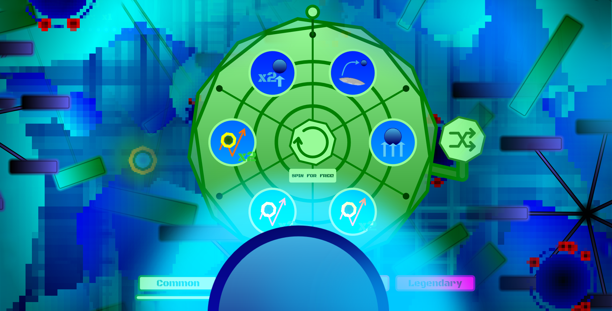
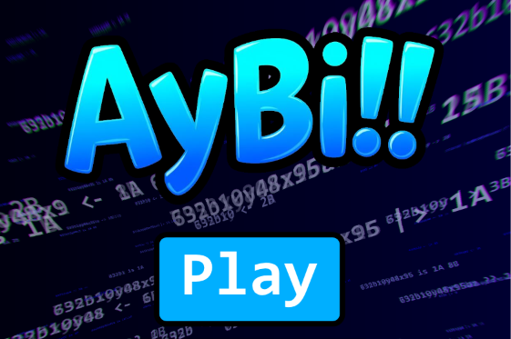
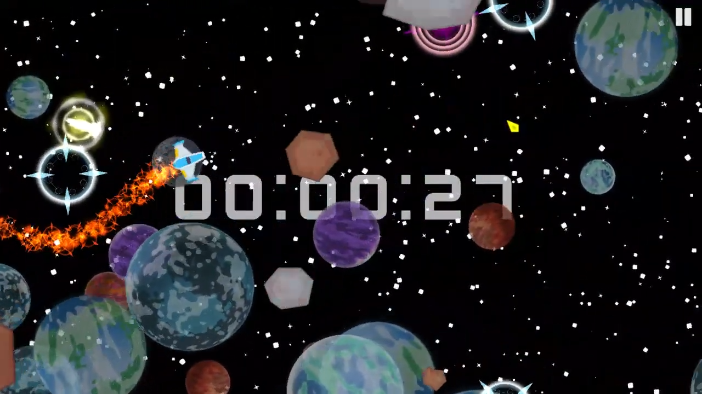
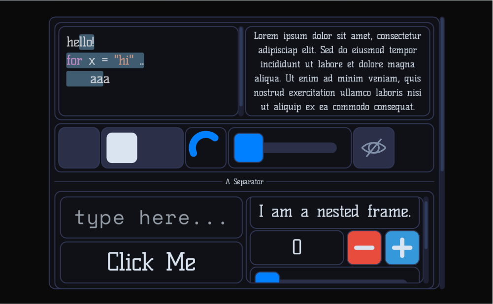
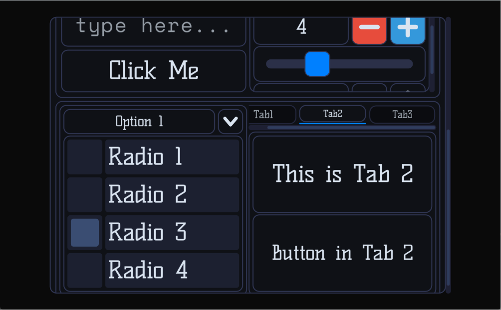

Hi, I'm Guilred!
I'm an enthusiastic tool and game developer, I mostly use C# and Monogame. Welcome to my corner of the internet. Feel free to explore my finished projects or check out the bigger projects I'm currently cooking up below.
Finished Projects

GuilRender
A diverse 2D rendering toolkit for MonoGame: batched shapes, gradients, and sprites with a full-featured bitmap font engine that handles wrapping, text interaction, and multi-atlas automatic scaling.
github →
WorldSpin
A game all about collecting goal orbs and spending them to gain abilities to gain even more goal orbs - Juniper Dev Game Jam Entry ranking #323 out of 3518 submissions.
itch.io →
Aybi
A reimagined version of the good ol' Cows & Bulls game! It introduces a competitive twist + it is playable locally & online.
itch.io →
Don't Fade
A game about navigating obstacles in a fading universe where interacting with orbs is the only way to stay alive.
itch.io →Works In Progress


GuilUI
A GUI library built using C# and MonoGame, featuring a powerful and rich set of UI tools, widgets and their customization and styling. It supports CSS-like flexbox and grid layouts, as well as a Markup Language.


Croissant
A game centred around creating maps in a high-performance, engine-like map editor. It uses GuilUI, and both might release simultaneously.